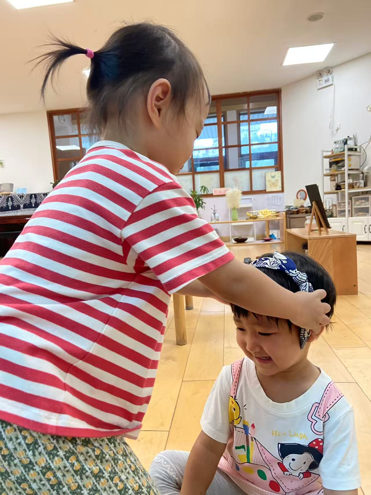

小伙伴们
Roman
活泼开朗的小伙伴，和核桃一起度过了许多欢乐时光

灿灿
温柔细腻的小姑娘，语言能力max
一禾
聪明可爱的小朋友，核桃的工作搭子
团子
活力满满的小姑娘，运动能力max
核桃
细腻、坚持、爱观察的小男孩，享受与伙伴们的每一天
友谊故事
✨ 滑动指尖，让时光倒流...
中央党校没有核桃
📅 2026年4月30日
一禾妈妈："那是妈妈的学校，一禾以后去中央党校当教授吧。"
一禾："不要，中央党校没有核桃。"
一禾妈妈:"那核桃也去当教授呢？"
一禾："那我也去。"
核桃陪我
📅 2026年3月24日
周末，一禾爸爸妈妈说："一禾，你自己工作好不好，爸爸妈妈要做饭。"
一禾："不要。"
一禾妈妈："你在幼儿园都是自己工作，在家为什么不能？"
一禾："在幼儿园不是。"
一禾妈妈："不是什么？"
一禾："幼儿园有核桃帮我，核桃陪我。"
欢迎灿灿
📅 2025年9月5日


欢迎灿灿加入大家庭！灿灿给团子戴上发箍，团子笑得合不拢嘴～
轮胎探索升级
📅 2025年9月5日

孩子们对轮胎的探索升级：从上学期简单的"座驾"和"床"，到现在能灵活移动、Roman扶着轮胎行走，甚至能独立抬起轮胎。手部力量、平衡感和协调能力都有了显著提升。游戏中的互助场景自然发生——当核桃说"请帮忙"时，一禾立即热情回应"宝宝来帮忙"，孩子们自发形成了美好的社交能力。
粉笔涂鸦
📅 2025年9月5日

一禾和夏天在地上用粉笔画画，老师简单的"鱼"图案激发了孩子们的想象力，他们用线条创造性地表现出"钓鱼"的情景。
手拉手放学
📅 2025年9月5日

放学路上，大家手拉手一起走，小小的手，大大的情谊。
一禾的冰淇淋
📅 2025年9月5日

一禾拿着篮球和锥桶，变身超大号"冰淇淋"！
跳绳掉进去啦
📅 2025年9月5日
核桃通过大臂摇大绳时，发现跳绳掉进了地板缝，就好像发现了新大陆一样兴奋。他努力调整手的动作，让跳绳与地板缝完美重合——完成后非常满足，开心地说出"掉进去啦～"。这是孩子内心追求完美、享受掌控感的自然流露。
多肉种植日
📅 2025年8月29日


小手与土壤的亲密接触！孩子们用稚嫩的手指认真填土，看小倩老师将一株株萌态多肉栽进彩色陶罐。
欢迎一禾
📅 2025年8月25日


欢迎一禾小朋友，第一个5人组~
户外进餐
📅 2025年8月16日

户外进餐，更有感觉！
尝试吃生菜
📅 2025年8月16日

小朋友们尝试吃生菜，勇敢尝试新食物！
旅行照片分享
📅 2025年8月16日

小朋友们一起分享旅行照片！
李子熟了
📅 2025年8月2日

学校的李子熟了，孩子们每天盯着哪个红了，老师去摘李子，孩子们还要扶着腿和脚丫子。
下大雨啦
📅 2025年8月1日

北京大雨给孩子们增加了感官体验的机会，珠帘一样的雨滴用手，用头，用脚丫子尽情感受。
男孩组合
📅 2025年7月28日


周三男孩组合（核桃和Roman）两人欢脱一天！
上午户外和一班小朋友做"叶子🍃彩带"，小朋友们热情的邀请我们也一起参加。两个小男生一开始安静的站在旁边观察，之后尝试着加入，最后才开始玩儿起来了。就特别欢脱。摸到了叶子就赶快跑着去粘在彩带上，一边粘一边咯咯咯的笑。到了一班小朋友认识叶形的时候，曼曼问谁可以找到椭圆形的叶子，Roman也快速跟着举手🙌去找，Roman找来的不是椭圆形，找的是他认为最漂亮的叶子。
集市活动
📅 2025年7月25日


小朋友们参加了一班的集市活动，大家摸一摸，看一看，还换了自己喜欢的玩偶。热闹又有趣的集市体验！
团子的新发型
📅 2025年7月25日

团子理短发了，自己动手洗了尿湿的裤子。
一起拧螺丝
📅 2025年7月25日

三个人一起唱完five little ducks （可以唱下来一首哦）可以一起用英文数数 one two three four再开始唱（用积极的声音，自发社交）。 团子嗨皮地开始做感官 这是其中的拧螺丝 男生观摩，团子不让他们动手
紫草膏的故事
📅 2025年7月25日

俩姐妹对紫草膏非常感兴趣，一起给小倩抹紫草膏。小倩说："紫草膏抹完要用洗手液洗手哦，不能放到眼睛嘴巴里。"团子听完立马跑去洗手。
参加二班的联欢会
📅 2025年7月25日


刚开始有点蒙蒙的，但超级认真观摩（吸收性心智启动中……）近距离的观看了孔雀舞、民族舞、还有冰雪女王的舞蹈。夏天和团子积极参与到集体舞蹈中……
户外光脚玩水
📅 2025年5月14日


户外光脚玩水后，小朋友们一起集体泡脚
Roman送团子放学
📅 2025年5月8日
放学时间，Roman和团子的温馨时刻。
欢迎团子
📅 2025年4月15日

这是团子和核桃第一次见面的日子，两个小朋友一起烤芦笋，开启了他们的友谊之旅。
欢迎夏天
📅 2025年3月11日


欢迎夏天小朋友加入我们的大家庭！
欢迎核桃
📅 2025年3月3日


欢迎核桃小朋友加入我们的大家庭！
💫 故事未完待续...